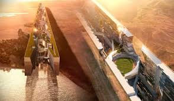
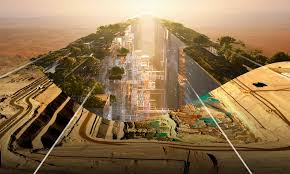
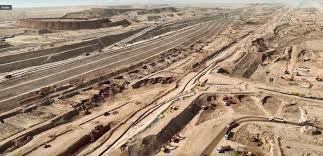
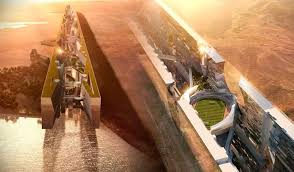
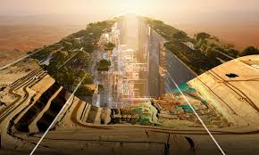
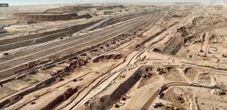

مرحبا بكم فى مدينة نيوم
مدينة نيوم واحدة من أضخم المشاريع العمرانية والتكنولوجية في العالم، وهي تجسد رؤية المملكة العربية السعودية لمستقبل مستدام ومبهر. تقع نيوم في شمال غرب المملكة، على مقربة من البحر الأحمر، حيث تمتاز بموقع استراتيجي يربط بين ثلاث دول: السعودية، الأردن، ومصر. تهدف المدينة إلى أن تصبح نموذجًا حيًا للابتكار التكنولوجي والتنمية المستدامة، مع التركيز على تقديم بيئة عيش مثالية ومؤسسات اقتصادية متطورة
ذا لاين
تعد "ذا لاين" أبرز مشاريع نيوم وأكثرها تطورًا، وهي عبارة عن مدينة ذكية خالية من السيارات، تمتد على طول 170 كم. سيتم تصميم المدينة بطريقة تسمح لسكانها بالوصول إلى جميع احتياجاتهم في غضون 20 دقيقة سيرًا على الأقدام، ما يجعل التنقل أكثر سهولة وأمانًا. سيتم بناء المدينة باستخدام تقنيات حديثة بحيث توفر حياة متكاملة في بيئة نظيفة وخالية من التلوث.
 





اوكساجون
هي المدينة البحرية المقرر بناؤها في نيوم، وتهدف إلى أن تكون أكبر مدينة صناعية بحرية في العالم. ستتخصص أوكساچون في الصناعات المستدامة، بما في ذلك الطاقة المتجددة، والتكنولوجيا المتقدمة، مع التركيز على تقليل البصمة الكربونية
تروجينا
منطقة تروجينا ستكون مركزًا سياحيًا وترفيهيًا، حيث ستجمع بين الجمال الطبيعي للجبال والأنشطة الرياضية والترفيهية على مدار العام. ستوفر تروجينا مناطق للتزلج على الجليد، إضافة إلى منتجعات صحية ومرافق للسياحة البيئية، مما يجعلها وجهة سياحية متكاملة.